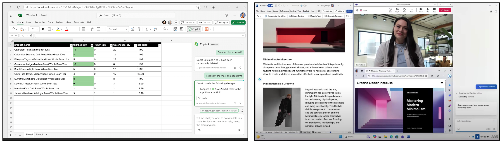
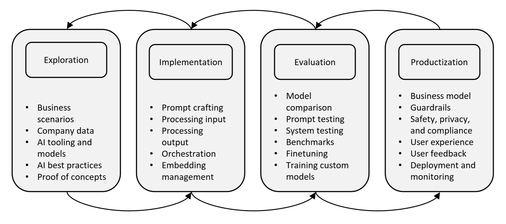

Austin Z. Henley
I work on AI + developer tools.
The pain points of building a copilot
2/4/2024
See the discussion of this post on Hacker News.
This post is a summary of our paper, "Building Your Own Product Copilot: Challenges, Opportunities, and Needs". See the preprint for more details. Thanks to my collaborators at Microsoft: Chris Parnin, Gustavo Soares, Rahul Pandita, Jessica Rich, and Sumit Gulwani.
Companies everywhere are launching copilots—AI assistants that leverage LLMs to assist with tasks. For example, Office Copilot helps you with Word and Excel, GitHub Copilot helps you write code, Intuit Assist helps with filing taxes in TurboTax, Adobe Firefly helps you generate and edit images, and Dropbox AI answers questions about your documents.

Given the sudden surge in generative AI being integrated into products, we wanted to know what is the process that software engineers follow to build these products, what are the pain points, and what are the opportunities for tools.
Towards this, we conducted semi-structured interviews with 26 developers from a variety of companies that are working on copilots. We qualitatively analyzed their responses to identify themes. Then we conducted two focus group sessions with tool builders that involved reviewing our interview findings and brainstorming possible solutions.
Process of building a copilot
Given the nondeterministic nature of LLMs, it changes the typical software development process. We modeled the high-level process that the developers we interviewed are following: exploration, implementation, evaluation, and productization. It is not linear though, rather it is messy and iterative.

For example, there are additional risks that product teams are taking on. They must identify business scenarios that they think are feasible to solve using LLMs, tinker with various technologies to see if it works (e.g., LLMs, embeddings, vector databases), evaluate if it is good enough, and then they have to ship it to actual users.
Each and every one of these tasks has pain points for developers.
Pain points
We categorized the pain points into 6 fundamental themes that developers face while building a copilot:
- Prompt engineering is time consuming and requires considerable trial and error. Additionally, it is tedious to parse the output and requires balancing more context with using fewer tokens. Another problem is managing the prompts, prompt templates, what worked, what didn't work, and why changes to them were made. As one developer said, "it's more of an art than a science".
- Orchestration of multiple data sources and prompts is not trivial. Systems attempt to detect the user's intent and route the workflow through multiple prompts, but that increases the surface area of failure cases. Planning and multi-turn workflows are also sought after but prove to be even harder to steer. As many developers told us, it goes "off the rails".
- Testing is fundamental to software development but arduous when LLMs are involved. Every test is a flaky test. Some developers run unit tests multiple tests and look for consensus. Others try to build large benchmarks that can be used to measure how prompts or models impact the results, but it requires expertise and is expensive. When is it "good enough"?
- Best practices on how to work with LLMs was sought after by many of the developers. They resort to following Twitter hashtags or reading arXiv papers to learn, but it doesn't scale and they don't know which resources are good. The field is moving fast, and it requires developers to "throw away everything that they've learned and rethink it."
- Safety, privacy, and compliance is a concern in everyone's mind. It requires guardrails to prevent the copilot from causing damage, but you also can't collect telemetry data on how it is being used since that causes privacy issues with the users' data. A safety review is a new, and often tedious, task that software engineers are going through.
- Developer experience is a pain point for anyone involved with building copilots. While there are new tools, like Langchain, they often didn't scale beyond a prototype. For example, prompts are often just string variables in their source code. Developers are having to learn and compare many new tools rather than focusing on the customer problem. They then have to glue these tools together.
Opportunities for tools
In our focus group sessions with professional tool builders, we identified several opportunities for tools, processes, and techniques to help developers build copilots.
- There needs to be authoring, validation, and debugging support for prompts. For example, a prompt linter could provide quick feedback. Developers also asked for a library or "toolbox" of prompt snippets for common tasks. Additionally, tracing the effect of prompt changes would be of huge value.
- A lack of transparency and control often leaves users confused. For example, it is often not obvious to users what information the AI has access to or what actions it can perform.
- Developers want automated methods to measure their AI or a tool that captures user feedback. Unfortunately, the developers also expressed not wanting to learn statistics or machine learning metrics, like BLEU.
- A one-stop shop for integrating AI into projects remains a challenge. Developers are seeking a place to get started quickly, transition from a playground to an MVP, connect their various data sources to the prompts, and then move the AI components into their existing codebase efficiently.
It is still the wild, wild west of product copilots. It will be interesting to see how software engineering will evolve, either through new processes or tools, over the next several years.
Read more in the paper: Building Your Own Product Copilot: Challenges, Opportunities, and Needs.